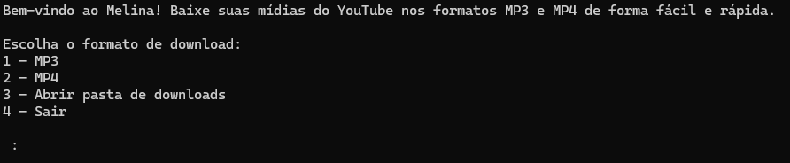

SOBRE MIM
Sou Guilherme Agapito, técnico em Informática e graduando em Engenharia de Computação. Tenho paixão por tecnologia e gosto de programar, sempre buscando aprender mais e desenvolver soluções práticas através da computação.
FORMAÇÃO
- Técnico em Informática - E.E.E.P. Francisca Maura Martins
- Graduando em Engenharia de Computação - Universidade Federal do Ceará
TECNOLOGIAS:


PROJETOS:
Melina
Melina é um programa leve e prático para Windows, criado para facilitar o download de vídeos e músicas do YouTube nos formatos MP4 e MP3. Em sua versão 1.0, já vem com o FFmpeg embutido, permitindo conversões automáticas para MP3 em alta qualidade (192kbps), sem necessidade de instalação adicional. Basta extrair a pasta e executar o melina.exe para começar a usar. Ideal para quem busca uma solução direta e funcional.